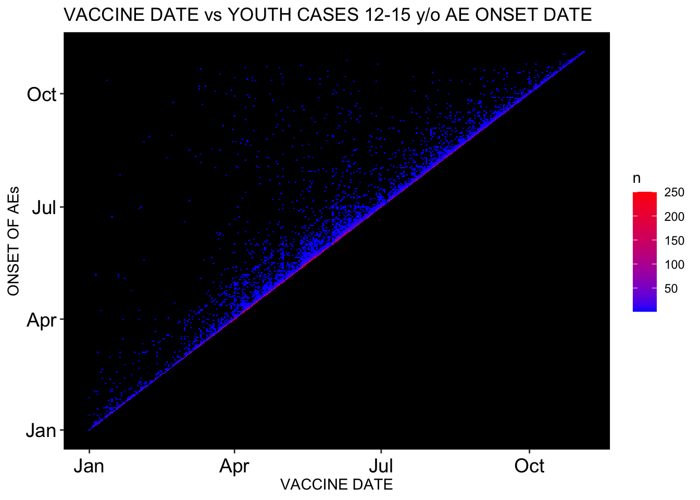

This is an R Markdown sheet generated from the VAERS data. For the most part, only figures are shown. I decided to show figures pertaining to Death, Female Reproductive Issues, Breakthrough COVID-19 infections and Cardiovascular and Immunological adverse events. ALso included is some stuff on kids and Myocarditis.
I start by coalescing the .csv files downloaded from the VAERS website: https://vaers.hhs.gov/data/datasets.html
This is the total number of adverse events in the context of COVID-19 products from Fizer, Modrna and JJ
## [1] 427831
Percent of VAERS reports made by Females
## [1] 69.99703
The following table is a summary of some variables in the context of COVID-19 product roll-out including changing fully-injected numbers (FV = Fully Vaccinated; SAE = Severe Adverse Events; ER = Emergency doctor visits; COVID = Breakthrough infections; FRI = Female Reproductive Issues)
## DATE IDs FV DEATH HOSPITAL ER SAE COVID FRI
## 1 2021-01-16 1431 4582089 137 338 338 690 194 4
## 2 2021-01-23 2160 7664179 281 607 576 1207 254 7
## 3 2021-01-30 2946 11037313 456 953 847 1806 326 8
## 4 2021-02-13 5351 18895522 810 1747 1493 3221 619 24
## 5 2021-02-27 9286 27167910 984 2195 2187 4291 717 34
## 6 2021-03-05 14701 31720149 1162 2676 2980 5535 776 43
## 7 2021-03-12 20586 35000000 1419 3412 3855 7065 943 67
## 8 2021-03-19 27955 44145522 1561 3913 4763 8470 1057 77
## 9 2021-03-26 34121 48700000 1957 4387 5529 9796 1169 88
## 10 2021-04-02 40348 57980000 2149 4758 6329 10930 1267 98
## 11 2021-04-09 46163 64420000 2240 4906 6983 11724 1375 105
## 12 2021-04-16 57641 80610000 2500 5009 8084 13057 1404 123
## 13 2021-04-23 75370 89250000 3084 6215 10375 16478 1587 165
## 14 2021-04-30 108191 99670000 3442 8099 14553 22145 1930 287
## 15 2021-05-07 146622 108930000 3731 10648 19620 29024 2776 436
## 16 2021-05-14 182559 118990000 4015 11557 23641 33791 3317 597
## 17 2021-05-21 217716 126610000 4169 12625 27774 38650 3742 774
## 18 2021-05-28 252523 132770000 4372 14977 32547 44860 4285 1067
## 19 2021-06-04 284041 136640000 4547 17520 37184 51068 4850 1421
## 20 2021-06-11 316929 141580000 4700 19354 41937 57073 5497 1967
## 21 2021-06-18 346967 148460000 4825 20571 45952 61917 6151 2460
## 22 2021-06-25 368162 151620000 4931 21636 49511 66255 6414 2940
## 23 2021-07-02 388900 155880000 5163 22612 52399 69941 9442 5351
## 24 2021-07-09 397262 158290000 5375 23441 53789 71963 9721 5557
## 25 2021-07-16 403335 160410000 5508 24087 55016 73645 9939 5723
## 26 2021-07-23 409924 162170000 5604 24778 56357 75536 10212 5946
## 27 2021-07-30 419295 163870000 6538 25634 57820 78186 10728 6188
## 28 2021-08-06 427831 165640000 6639 26402 59061 80011 11381 6398
This is the change in absolute number of VAERS IDs per year.
These are the VAERS ID counts for the past 30 years normalized to U.S. population per million. The blue line is the best fit line - you can use it to imagine where we might have been number-wise at the end of 2021 if anything was even remotely typical.
This is the cumulative number of VAERS IDs (N) so far for 2021 in the context of the COVID-19 products.
 This is the number of VAERS IDs (N) so far for 2021 in the context of the COVID-19 products normalized to FULLY INJECTED population per million.
This is the number of VAERS IDs (N) so far for 2021 in the context of the COVID-19 products normalized to FULLY INJECTED population per million.
 These are the trajectories of cumulative data for the respective groups.
These are the trajectories of cumulative data for the respective groups.
 These are the trajectories of normalized data for the respective groups (normalized to US FULLY INJECTED population per million).
These are the trajectories of normalized data for the respective groups (normalized to US FULLY INJECTED population per million).

 This is the number of birth defects.
This is the number of birth defects.
## [1] 258
This is the number of deaths and the percentage per total AEs.
## [1] 6639
## [1] 1.551781
These are the number of hospitalizations and emergency doctor visits.
## [1] 26402
## [1] 59061
These are the numbers of Severe Adverse Events (SAEs): Deaths, Hospital, ER, Life threatening, Disabling, Birth defect with the total SAE count and percentage of all AEs.
## [1] 6639
## [1] 26402
## [1] 59061
## [1] 7523
## [1] 6861
## [1] 258
## [1] 80011
## [1] 18.70154
Histogram showing distribution of SAEs according to age group
 Actual VAERS SAE percentage compared to Standard VAERS SAE percentage
Actual VAERS SAE percentage compared to Standard VAERS SAE percentage
## Percent_SAE SAE PERC
## 1 Standard 65000 15
## 2 Actual 80011 19
 Breakthrough COVID-19 case count AND PERCENTAGE of total ID count
Breakthrough COVID-19 case count AND PERCENTAGE of total ID count
## [1] 11381
## [1] 2.660163


Female Reproductive Events count
## [1] "Abnormal uterine bleeding"
## [2] "Afterbirth pain"
## [3] "Dysmenorrhoea"
## [4] "Female reproductive tract disorder"
## [5] "Female reproductive tract disorder"
## [6] "Alpha 1 foetoprotein abnormal"
## [7] "Heavy menstrual bleeding"
## [8] "Intermenstrual bleeding"
## [9] "Intra-uterine contraceptive device removal"
## [10] "Menstrual disorder"
## [11] "Menstruation delayed"
## [12] "Menstruation irregular"
## [13] "Premenstrual syndrome"
## [14] "Abortion spontaneous"
## [15] "Abortion spontaneous incomplete"
## [16] "Uterine leiomyoma"
## [17] "Uterine haemorrhage"
## [18] "Uterine spasm"
## [19] "Bradycardia foetal"
## [20] "Biopsy foetal"
## [21] "Bradycardia foetal"
## [22] "Foetal cystic hygroma"
## [23] "Foetal death"
## [24] "Foetal exposure during pregnancy"
## [25] "Foetal heart rate abnormal"
## [26] "Foetal hypokinesia"
## [27] "Foetal non-stress test abnormal"
## [28] "Amenorrhoea"
## [29] "Hypomenorrhoea"
## [30] "Menopause"
## [31] "Menorrhagia"
## [32] "Oligomenorrhoea"
## [33] "Polymenorrhoea"
## [34] "Postmenopausal haemorrhage"
## [35] "Postmenopause"
## [36] "Vaginal discharge"
## [37] "Vaginal disorder"
## [38] "Vaginal erosion"
## [39] "Vaginal haemorrhage"
## [40] "Vaginal lesion"
## [41] "Vaginal infection"
## [42] "Vulvovaginal mycotic infection"
## [43] "Vulval ulceration"
## [44] "Vulval abscess"
## [45] "Vulva cyst"
## [46] "Cervix inflammation"
## [47] "Adenocarcinoma of the cervix"
## [48] "Cervix carcinoma"
## [49] "Amniorrhoea"
## [50] "Amniotic cavity infection"
## [51] "Amniotic membrane rupture test positive"
## [52] "Amniotic fluid index decreased"
## [1] 6398
## [1] 1.49545
Histogram showing distribution of Female Reproductive Issues by age group

##
## Chi-squared test for given probabilities
##
## data: FRI_CASES_VD_OD$OBSERVED
## X-squared = 16807, df = 50, p-value < 2.2e-16
Cumulative FRI cases as per update - rates increasing.
 Heatmap showing Female Reproductive Issues wrt VAX DATE and ONSET DATE. Early April shows a clustering of intersecting points.
Heatmap showing Female Reproductive Issues wrt VAX DATE and ONSET DATE. Early April shows a clustering of intersecting points.

 Cardiac Events Count
Cardiac Events Count
## [1] "Arrhythmia"
## [2] "Myocarditis"
## [3] "Pericarditis"
## [4] "Endocarditis"
## [5] "Cardiac arrest"
## [6] "Chest pain"
## [7] "Myocardial infarction"
## [8] "Pericardial effusion"
## [9] "Aneurysm"
## [10] "Blood fibrinogen"
## [11] "Blood fibrinogen increased"
## [12] "Circulatory collapse"
## [13] "C-reactive protein decreased"
## [14] "C-reactive protein increased"
## [15] "Deep vein thrombosis"
## [16] "Dizziness"
## [17] "Fatigue"
## [18] "Fibrin D dimer increased"
## [19] "Irregular breathing"
## [20] "Ischaemia"
## [21] "Microembolism"
## [22] "Pallor"
## [23] "Palpitations"
## [24] "Platelet count decreased"
## [25] "Platelet count increased"
## [26] "Red blood cell count abnormal"
## [27] "Red blood cell count decreased"
## [28] "Red blood cell count increased"
## [29] "Red blood cell rouleaux formation present"
## [30] "Red blood cell schistocytes present"
## [31] "Syncope"
## [32] "Troponin"
## [33] "Troponin increased"
## [34] "Troponin I"
## [35] "Troponin I increased"
## [36] "Troponin T increased"
## [37] "Thrombosis"
## [38] "Echocardiogram abnormal"
## [39] "Dyspnoea"
## [1] 138394
 This is the number of kids aged 12-18 reported to VAERS with AEs, the percentage of the total AEs reported and a histogram showing age group distribution.
This is the number of kids aged 12-18 reported to VAERS with AEs, the percentage of the total AEs reported and a histogram showing age group distribution.
## [1] 18446

## [1] 18021
## [1] 4.212177
And this is a heatmap showing 1:1 correlation between onset of AE and injection date.
 Here we have the percentage of cardiac cases for kids aged 12-15 of the total youth population (12-18) in VAERS, the percentage of cardiac AEs that come from youths and the percentage of cardiac cases in kids aged 12-15 of the totoal cardiac AEs.
Here we have the percentage of cardiac cases for kids aged 12-15 of the total youth population (12-18) in VAERS, the percentage of cardiac AEs that come from youths and the percentage of cardiac cases in kids aged 12-15 of the totoal cardiac AEs.
## [1] 14.4942
## [1] 13.02152
## [1] 1.887365
Immunological Adverse Effects Count
## [1] "Anaphylactic reaction"
## [2] "Anaphylactic shock"
## [3] "Anaphylactoid reaction"
## [4] "Autoimmune demyelinating disease"
## [5] "Autoimmune disorder"
## [6] "Autoimmune thyroiditis"
## [7] "Chills"
## [8] "Cytokine storm"
## [9] "Drug reaction with eosinophilia and systemic symptoms"
## [10] "Dysgeusia"
## [11] "Dysphagia"
## [12] "Encephalomyelitis"
## [13] "Erythema"
## [14] "Febrile neutropenia"
## [15] "Fungal infection"
## [16] "Genital rash"
## [17] "Guillain-Barre syndrome"
## [18] "Haemorrhage subepidermal"
## [19] "Hepatitis"
## [20] "Hepatitis acute"
## [21] "Herpes simplex"
## [22] "Herpes simplex encephalitis"
## [23] "Herpes simplex reactivation"
## [24] "Herpes virus infection"
## [25] "Herpes zoster"
## [26] "Herpes zoster cutaneous disseminated"
## [27] "Hyperpyrexia"
## [28] "Immediate post-injection reaction"
## [29] "Immune thrombocytopenia"
## [30] "Inflammation"
## [31] "Leukopenia"
## [32] "Lymphadenitis"
## [33] "Lymphadenopathy"
## [34] "Malaise"
## [35] "May-Thurner syndrome"
## [36] "Meningitis"
## [37] "Meningitis aseptic"
## [38] "Meningitis viral"
## [39] "Myelitis"
## [40] "Multiple sclerosis relapse"
## [41] "Multiple allergies"
## [42] "Myelitis transverse"
## [43] "Neuritis"
## [44] "Noninfective encephalitis"
## [45] "Ophthalmic herpes simplex"
## [46] "Oral herpes"
## [47] "Oral viral infection"
## [48] "Pancreatitis"
## [49] "Pancreatitis acute"
## [50] "Parkinsonism"
## [51] "Peptostreptococcus infection"
## [52] "Periarthritis"
## [53] "Pneumonia viral"
## [54] "Pruritus"
## [55] "Rash"
## [56] "Rash erythematous"
## [57] "Rash macular"
## [58] "Rash maculo-papular"
## [59] "Rash morbilliform"
## [60] "Rash papular"
## [61] "Rash pruritic"
## [62] "Rash pustular"
## [63] "Rash vesicular"
## [64] "Reaction to excipient"
## [65] "Rheumatoid arthritis"
## [66] "Butterfly rash"
## [67] "Necrosis"
## [68] "Stevens-Johnson syndrome"
## [69] "Systemic lupus erythematosus"
## [70] "Systemic lupus erythematosus rash"
## [71] "Systemic scleroderma"
## [72] "Thrombophlebitis"
## [73] "Type III immune complex mediated reaction"
## [74] "Urticaria"
## [75] "Varicella zoster virus infection"
## [76] "Vestibular neuronitis"
## [77] "Viral cardiomyopathy"
## [78] "Viral infection"
## [79] "Viral pericarditis"
## [80] "Viral rash"
## [81] "Systemic scleroderma"
Here we have the total AE count for immunological adverse events as per the list above. This is a very short list as compared with the total number of immunological AEs. It is merely a representation.
## [1] 141802

This is a histogram showing death distribution according to age group. We also have a time series plot showing clustering of data around day 1 following injection. And! We have a heatmap confirming strong correlation between injection date and death date. R=1 -> perfect correlation (look for red on diagonal).


 This is a histogram showing hospitalization distribution according to age group. We also have a time series plot showing clustering of data around day 1 following injection. And! We have a heatmap confirming strong correlation between injection date and hospitalization date. R=1 -> perfect correlation (look for red on diagonal).
This is a histogram showing hospitalization distribution according to age group. We also have a time series plot showing clustering of data around day 1 following injection. And! We have a heatmap confirming strong correlation between injection date and hospitalization date. R=1 -> perfect correlation (look for red on diagonal).

 This is a histogram showing ER distribution according to age group. We also have a time series plot showing clustering of data around day 1 following injection. And! We have a heatmap confirming strong correlation between injection date and ER date. R=1 -> perfect correlation (look for red on diagonal).
This is a histogram showing ER distribution according to age group. We also have a time series plot showing clustering of data around day 1 following injection. And! We have a heatmap confirming strong correlation between injection date and ER date. R=1 -> perfect correlation (look for red on diagonal).


 And hey! What would this analysis be without myocarditis? This is the count of myocarditis cases and the percentage of the total count for cardiac cases and for the total AE count.
And hey! What would this analysis be without myocarditis? This is the count of myocarditis cases and the percentage of the total count for cardiac cases and for the total AE count.
## [1] 671
## [1] 0.4848476
## [1] 0.1568376
And this plot shows age versus dose data for myocarditis cases. Notice how many young people. Hmm what’s that now? Dose 2 is causing moycarditis in young males? Hmm